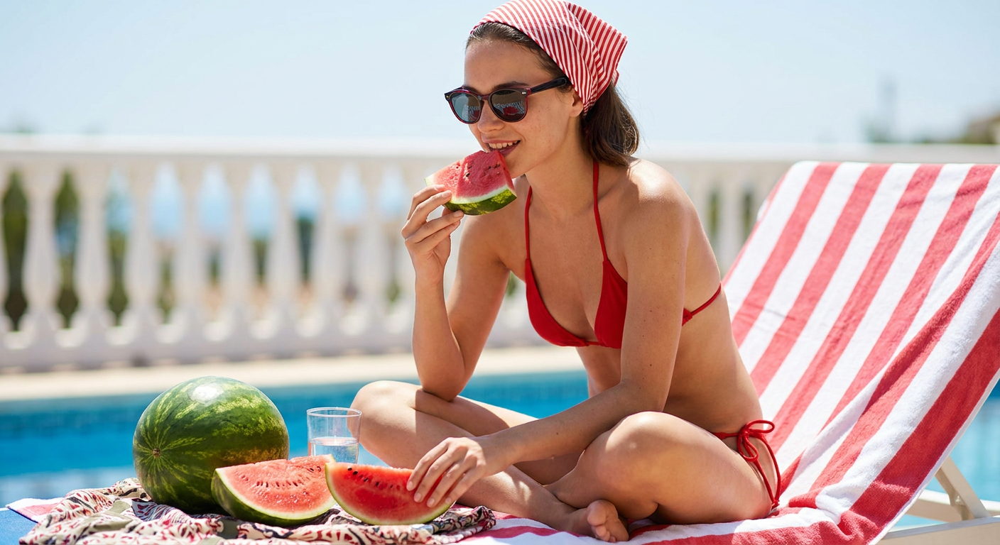
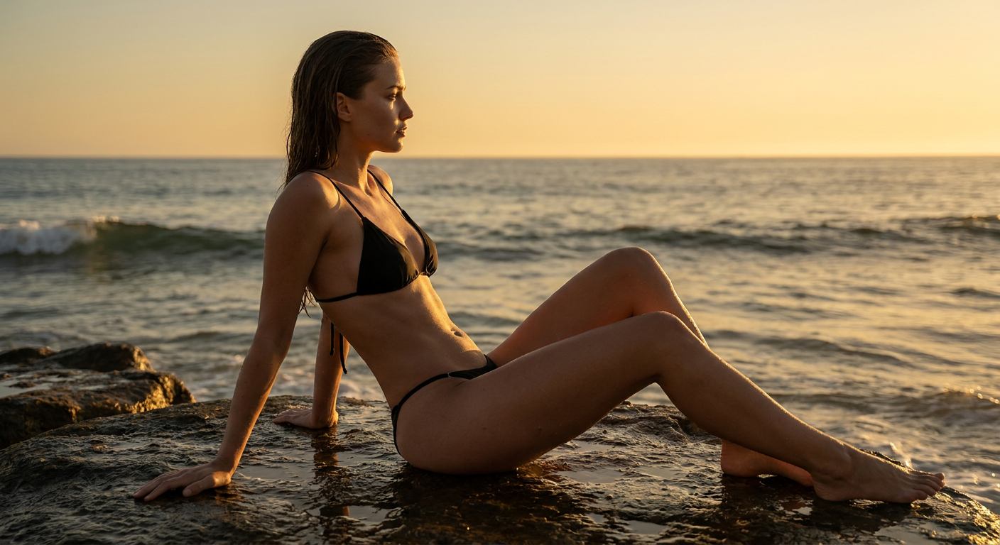
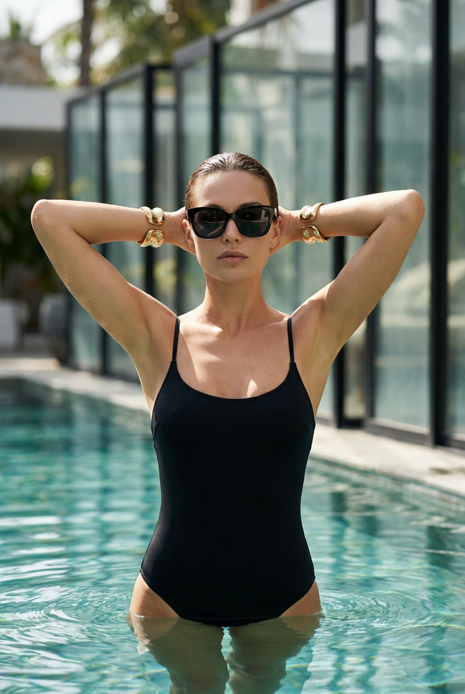
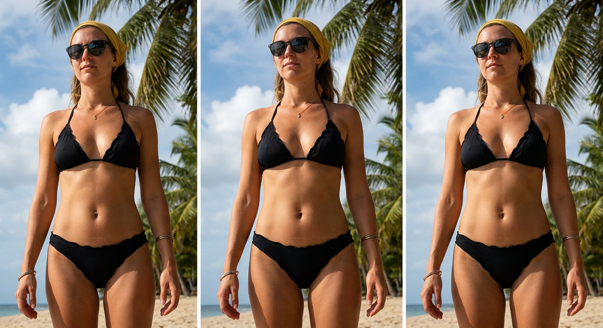
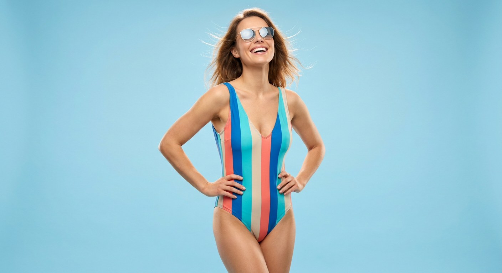
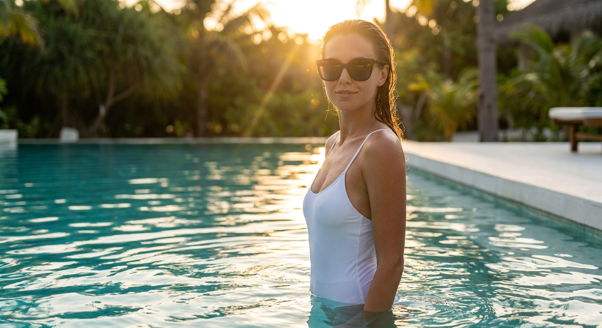
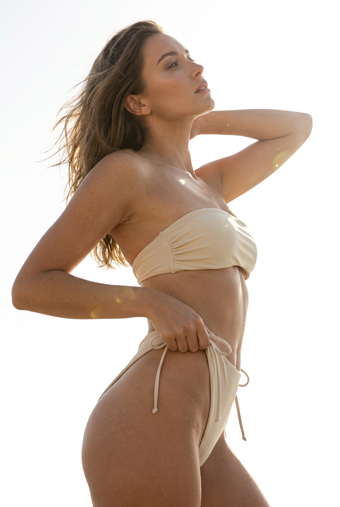
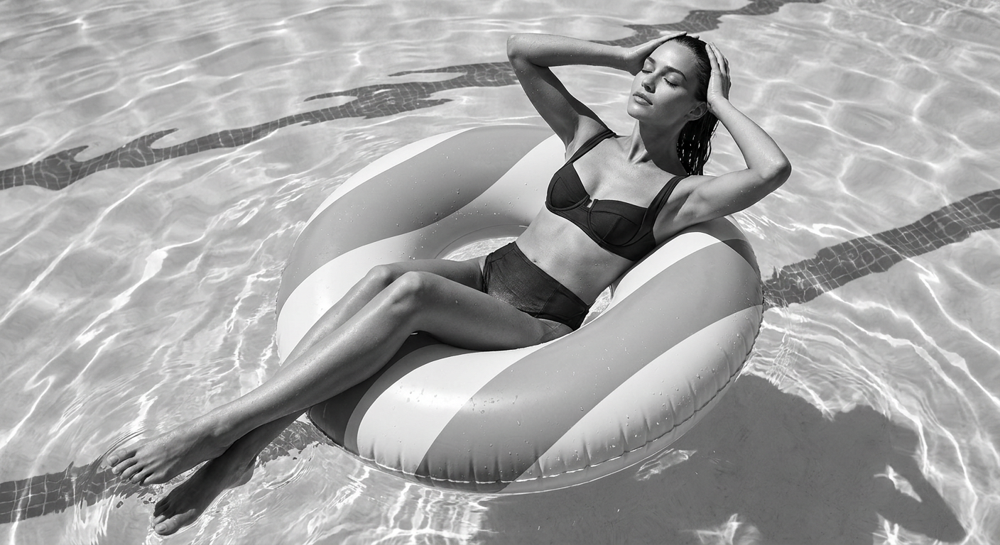
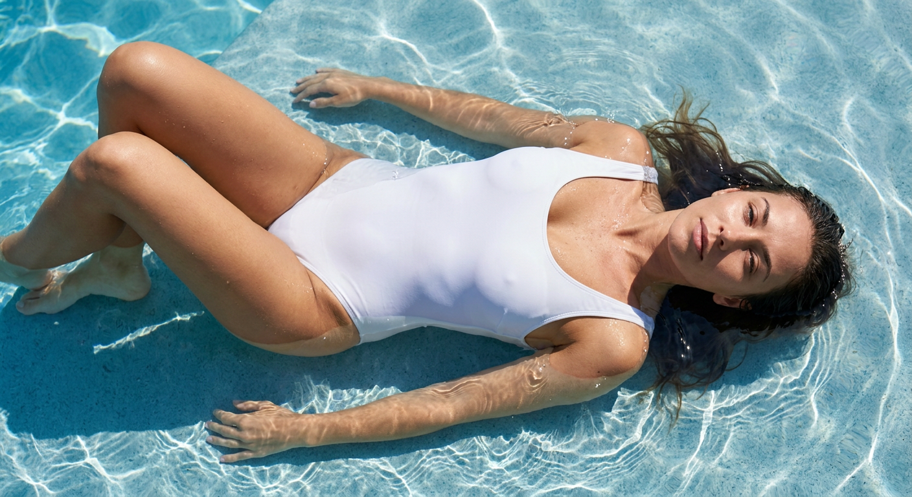
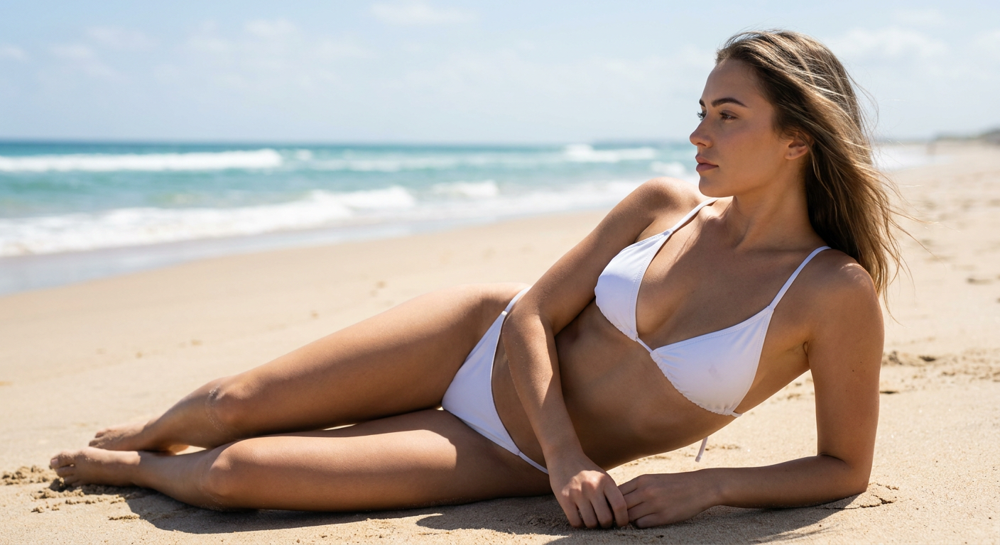

ИИ-фото в купальнике: 10 промптов для нейросети

Обычный запрос вроде «девушка на пляже в купальнике» часто даёт пластиковую кожу, лишние пальцы и одежду с расплывшимся узором. Генерация по подробному сценарию помогает заранее задать позу, свет, композицию и фактуру кадра.
В подборке — 10 промптов для разных настроений: от яркой съёмки у бассейна и тропического пляжа до чёрно-белого кадра сверху, золотого часа и минималистичной студии.
Как сгенерировать такое фото: пошагово
Нужен снимок анфас при ровном свете, лицо в кадре целиком, без тёмных очков и головных уборов. Разрешение от 1000 пикселей по короткой стороне. Чем чётче исходник, тем точнее модель повторит черты.
Выберите сценарий ниже и нажмите «Копировать» — текст уйдёт в буфер целиком, вместе с командой сохранения внешности. Эта команда стоит первой строкой и отвечает за то, чтобы на выходе было ваше лицо, а не случайное.
Кнопка «Сгенерировать» рядом с каждым промптом открывает модель в новой вкладке. Nano Banana Pro работает с референсом лица — в отличие от моделей, которые генерируют портрет с нуля и узнаваемость теряют.
Промпт — в поле ввода, портрет — через загрузку референса. Порядок значения не имеет, но без референса команда сохранения внешности работать не будет: модели нечего сохранять.
Для сторис и ленты берите 9:16, для превью и обложек — 4:3. Первый результат редко идеален: если поза или свет ушли не туда, поправьте соответствующую часть промпта и запустите заново. Обычно хватает двух-трёх итераций.
10 промптов для генерации
1. Красный бикини у бассейна
Строго сохранить внешность по загруженному референсу: черты лица, пропорции, мимику и текстуру кожи без изменений. Фотореалистичный летний lifestyle-кадр у бассейна при ярком дневном солнце. Девушка сидит перед камерой на лежаке или просторной террасе, ноги скрещены по-турецки, спина слегка выпрямлена. Она смотрит прямо в объектив с уверенным выражением и едва заметной полуулыбкой. На лице — загруженный референс, естественная мимика и реальные пропорции. Красно-белая полосатая бандана завязана на голове, часть волос скрыта под тканью. Тёмные солнцезащитные очки с красной деталью на оправе, на линзах мягкое отражение света. На девушке красный бикини: треугольный верх на тонких бретелях и низ с аккуратными боковыми завязками. Материал современный, без логотипов, с натуральными складками. Кожа не пластиковая: видны микротекстура, солнечные блики и мягкие тени. Камера на уровне глаз, объектив 50 мм, малая глубина резкости, высокая детализация.
2. Чёрный бикини на закате

Строго сохранить внешность по загруженному референсу: черты лица, пропорции, мимику и текстуру кожи без изменений. Кинематографичная пляжная lifestyle-съёмка на берегу океана во время заката. На переднем плане девушка сидит на мокром тёмном камне у самой воды: колени согнуты, корпус немного развёрнут в сторону моря, одна рука лежит на камне, вторая свободно опущена рядом с телом. Голова повернута в профиль, взгляд направлен вдаль, настроение тихое и задумчивое. Лицо — по загруженному референсу, черты и естественная мимика без изменений. Волосы слегка влажные, макияж натуральный, кожа с реальной текстурой. На модели чёрный бикини с треугольными чашками и тонкими бретелями; ткань матовая, но с деликатным блеском по краям, посадка аккуратная, без логотипов. Тёплый оранжево-розовый свет отражается в воде и на коже, вокруг мягкие глубокие тени. Камера 85 мм, диафрагма f/2.8, кинематографичная цветокоррекция, высокая детализация.
3. Resort-кадр в бассейне

Строго сохранить внешность по загруженному референсу: черты лица, пропорции, мимику и текстуру кожи без изменений. Фотореалистичная fashion-съёмка в стиле luxury resort во внутреннем дворике с бассейном. Девушка находится в воде по грудь или чуть выше её уровня, в кадре видны голова, плечи и верхняя часть корпуса. Обе руки подняты и заведены за голову, локти широко разведены; пальцы удерживают волосы либо просто поддерживают затылок. Поза статичная, уверенная, с модельной подачей. Взгляд направлен немного влево от камеры, выражение лица спокойное, губы очерчены чётко. На лице — крупные солнцезащитные очки с широкой чёрной оправой и тёмными линзами без искажений. На запястьях массивные золотистые браслеты-манжеты с реалистичными металлическими бликами. Лицо взять с загруженного референса, сохранить индивидуальные черты и натуральную мимику. Ровный тон кожи, чистые отражения воды, мягкий солнечный свет, объектив 70 мм, фокус на лице и аксессуарах, без лишних предметов в фоне.
4. Тропический пляж снизу

Строго сохранить внешность по загруженному референсу: черты лица, пропорции, мимику и текстуру кожи без изменений. Фотореалистичный тропический beach lifestyle-кадр в ярком дневном свете. Девушка стоит на песчаном пляже лицом к объективу, камера расположена низко и направлена вверх: пальмы и насыщенное голубое небо занимают верхнюю часть композиции, модель находится в центре и ближе к нижнему краю. Она смотрит прямо на камеру через тёмные солнцезащитные очки, выражение спокойное и уверенное. На голове жёлтая тканевая повязка или платок, слегка задрапированный и завязанный сзади либо сбоку; часть волос убрана под ткань. Очки аккуратной формы, с естественными бликами на линзах. На шее тонкая цепочка с маленьким кулоном, металл мягко отражает солнце. Лицо — по загруженному референсу, кожа с натуральной текстурой и тёплыми солнечными тенями. Съёмка на широкоугольный объектив 28 мм, без чрезмерного искажения фигуры, резкие детали, чистое небо и реалистичный песок.
5. Полосатый купальник в студии

Строго сохранить внешность по загруженному референсу: черты лица, пропорции, мимику и текстуру кожи без изменений. Фотореалистичная минималистичная fashion-съёмка в студии на ровном светло-голубом фоне. Женщина стоит во весь рост, корпус расслаблен, волосы слегка развеваются потоком воздуха и выглядят живыми, а не пластмассовыми. На ней слитный купальник с вертикальными полосами голубого, бирюзового, песочно-бежевого и кораллового оттенков. Спереди V-образный вырез, тонкие бретели, точная посадка по фигуре. Материал матовый, эластичный, с натуральными складками; полосы остаются ровными и не ломаются на изгибах тела, никаких логотипов и надписей. Светлые солнцезащитные очки в тонкой белой или прозрачной оправе, на линзах лёгкое отражение студийного света, без артефактов. Лицо — по загруженному референсу, естественные черты и мимика. Камера на уровне груди, объектив 50 мм, равномерный мягкий свет, полный рост в кадре, разрешение 4K.
6. Белый купальник в золотой час

Строго сохранить внешность по загруженному референсу: черты лица, пропорции, мимику и текстуру кожи без изменений. Кинематографичная fashion-съёмка у бассейна на тропическом курорте в золотой час. Девушка стоит в воде по грудь или немного ниже линии груди; крупный портрет построен по плечи или по грудь. Плечи ровные, поза расслабленная, губы сохраняют естественную нейтральную мимику или лёгкую полуулыбку. Она смотрит в сторону камеры, но взгляд скрыт за крупными солнцезащитными очками с тёмными линзами и чёткой оправой. Отражения на стёклах реалистичные, без пластикового эффекта. На модели белый минималистичный слитный купальник без логотипов и лишнего декора. Макияж натуральный, кожа детализированная, волосы блестят в тёплом солнечном свете и выглядят слегка влажными, без эффекта наклеенных прядей. Вода даёт мягкие блики на лице и плечах. Объектив 85 мм, диафрагма f/2.8, золотистый контровой свет, спокойная resort-эстетика, высокая резкость.
7. Контровой свет и бикини

Строго сохранить внешность по загруженному референсу: черты лица, пропорции, мимику и текстуру кожи без изменений. Фотореалистичная fashion-съёмка с сильной контровой подсветкой и почти выбеленным солнечным фоном. Женщина в бежево-жёлтом кремовом бикини снята со спины и сбоку: видны профиль лица, спина и плавная диагональ тела. Голова немного поднята, взгляд направлен в небо или навстречу источнику света, губы расслаблены, выражение спокойное. Корпус слегка прогнут, плечи расправлены, линия тела образует естественную S-образную форму. Одна рука поднята за голову и касается волос либо бретели, вторая мягко корректирует положение у талии или бедра. Поза открытая, но без чрезмерной откровенности. Бикини с аккуратной посадкой, матовой тканью и тонкими деталями, без логотипов. Лицо взять с загруженного референса, сохранить естественные пропорции и мимику. Жёсткий солнечный контур по волосам и плечам, мягкий светлый фон, объектив 70 мм, высокая детализация кожи.
8. Чёрно-белый кадр сверху

Строго сохранить внешность по загруженному референсу: черты лица, пропорции, мимику и текстуру кожи без изменений. Фотореалистичная чёрно-белая fashion/lifestyle-съёмка в бассейне строго с верхней точки. Женщина с мокрыми волосами лежит на большом надувном круге с широкими полосами. Поверхность круга гладкая, виниловая, с каплями воды и мягкими бликами. На ней тёмный раздельный купальник: верх с плотными чашками и тонкими бретелями, лаконичный низ без логотипов и декоративных элементов. Обе руки подняты к голове, ладони касаются волос, локти разведены. Глаза закрыты, лицо расслабленное, будто модель наслаждается солнцем. Ноги вытянуты вперёд, лодыжки скрещены, ступни слегка касаются воды. Композиция симметричная, фигура расположена по центру, вокруг — графичный рисунок волн и круга. Лицо — по загруженному референсу, волосы и кожа с натуральной фактурой. Контрастная монохромная обработка, объектив 35 мм сверху, чёткие капли и мягкие полутона.
9. Белый купальник в воде

Строго сохранить внешность по загруженному референсу: черты лица, пропорции, мимику и текстуру кожи без изменений. Фотореалистичная fashion-съёмка в солнечный день у бассейна, камера расположена над моделью. Девушка лежит на спине в прозрачной воде: голова и плечи находятся ниже уровня воды или на самой границе поверхности, руки опираются на край композиции либо мягко лежат на воде. Одна нога согнута, другая вытянута, тело выстроено плавной S-образной линией. Лицо повернуто вверх, выражение расслабленное, мимика естественная. На девушке белый слитный купальник минималистичного кроя, без логотипов; ткань слегка намокла и реалистично прилегает к телу. Волосы растрёпаны и расходятся по поверхности воды, отдельные пряди прилипают к коже. Солнечные блики проходят сквозь воду, на коже видны микрорельеф и мягкие отражения, без пластикового эффекта. Объектив 50 мм, вид сверху, натуральная цветопередача, высокая детализация воды и ткани.
10. Пляжный профиль на песке

Строго сохранить внешность по загруженному референсу: черты лица, пропорции, мимику и текстуру кожи без изменений. Фотореалистичная летняя fashion-съёмка на песчаном пляже в дневном свете. Девушка лежит на боку или полубоком, корпус слегка развёрнут в сторону воды, верхняя часть тела приподнята на предплечье. Лицо показано в профиль, взгляд направлен вдаль, поза свободная и естественная, без чрезмерной постановочности. Лёгкий ветер развевает волосы. На модели белый треугольный купальник с тонкими бретелями и аккуратной посадкой; ткань матовая или с очень мягким блеском, без логотипов. Кожа имеет реальную текстуру, на плечах и бёдрах заметны деликатные солнечные блики, тени мягкие. В фоне — песок с хорошо читаемой мелкой фактурой, дальше море с пологими волнами и белой пеной. Лицо — по загруженному референсу, без изменения индивидуальных черт. Камера на уровне лежащей модели, объектив 85 мм, малая глубина резкости, натуральные цвета, спокойное морское настроение.
Что важно учесть в этом стиле
Для реалистичного ИИ-фото лучше разделять описание на четыре слоя: место, поза, одежда и съёмочные параметры. Если смешать всё в одну короткую фразу, нейросеть начнёт терять детали — например, заменит слитный купальник на бикини или перепутает направление взгляда.
Референс лица не гарантирует идеальное совпадение в каждом кадре. Помогают нейтральный макияж, один источник света и умеренная мимика. Для сложной позы полезнее сначала получить удачную композицию, а затем исправить руки, пальцы, очки и узор ткани отдельной генерацией.
Идеи для вариаций
- Замените дневной свет на пасмурное утро с холодными отражениями в воде.
- Добавьте плетёную сумку, соломенную шляпу или лёгкую рубашку поверх купальника.
- Попробуйте объектив 35 мм для более заметного окружения или 105 мм для плотного портрета.
- Сделайте серию в единой палитре: белый, терракотовый, бирюзовый или графитовый купальник.
- Попросите вертикальный формат 4:5 для публикации или горизонтальный 16:9 для обложки.
Как собрать свой промпт
Начните с типа кадра и локации: «портрет по плечи у бассейна», «полный рост на пляже» или «вид сверху в воде». Затем уточните положение тела, направление головы, взгляд и эмоцию. Эти параметры лучше писать прямо, без образных замен вроде «томная поза».
После этого добавьте купальник, аксессуары, свет и технику. Для точности можно указать объектив, диафрагму, формат 4:5 или 16:9, натуральную текстуру кожи и запрет на логотипы. Обычно на сложную сцену требуется 3–6 попыток: первая проверяет композицию, следующие исправляют руки, лицо, ткань и отражения.
Ошибки, из-за которых кадр не получается
- Слишком короткое описание. Нейросеть заполняет пробелы случайными деталями и меняет крой купальника.
- Несовместимый свет. Закатный фон и жёсткие полуденные тени в одном запросе дают неестественные цвета.
- Сложная поза без уточнений. Поднятые руки, вода и вид сверху часто приводят к лишним пальцам и вывернутым запястьям.
- Много аксессуаров. Очки, браслеты, платок и цепочка могут сливаться или исчезать, поэтому описывайте их по одному.
- Нет указания на материал. Без слов «матовая ткань», «виниловая поверхность» или «реалистичные отражения» одежда и вода выглядят нарисованными.
- Попытка исправить всё одним запросом. Лучше редактировать проблемную область маской, а не переписывать весь кадр.
Частые вопросы
Как сделать такое ИИ-фото бесплатно?
Для первых попыток можно использовать Kandinsky и Шедеврум: они подходят для текстовой генерации, но точность лица по референсу и стабильность позы ограничены. Krea AI и Arena.ai удобны для экспериментов с вариантами, однако доступность функций, лимиты и качество работы с загруженным изображением меняются. Бесплатные режимы часто уменьшают разрешение, добавляют очередь или не дают точного редактирования отдельных участков. Используйте только собственный снимок либо изображение человека, который дал согласие на обработку.
Как сохранить лицо по фотографии?
Загрузите качественный референс без сильных фильтров, очков и перекрывающих лицо волос. В промпте отдельно укажите, что нужно сохранить индивидуальные черты, пропорции и естественную мимику. Для сложной сцены начните с портрета, затем перенесите лицо в готовую композицию через режим редактирования или маску.
Почему нейросеть искажает купальник?
Модель может путать тонкие бретели, завязки и полосатый узор, особенно в воде или при скрученной позе. Описывайте крой отдельными фразами, добавляйте «без логотипов», «ровные полосы» и «реалистичная ткань». Если дефект остаётся, исправьте область купальника локальной перегенерацией.
Как получить более реалистичную кожу и воду?
Укажите микротекстуру кожи, мягкие солнечные блики, естественные тени, капли воды и прозрачные отражения. Не перегружайте запрос словами вроде «идеальная кожа»: они часто приводят к пластиковому лицу. Для воды полезно отдельно задать направление света, рябь, уровень погружения и видимые пряди мокрых волос.